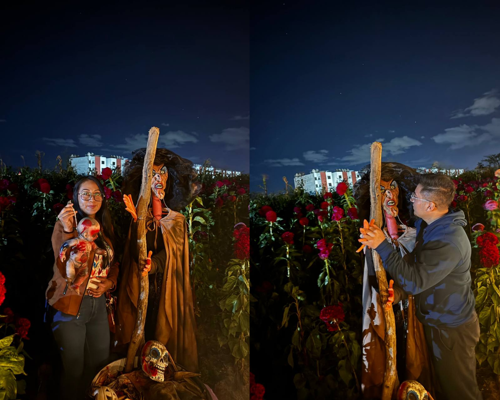

🟡 Field of Flowers commit 0004 Date: Oct 23, 2025 🟢 Git Message feat: first full-day adventure completed ⚪ Story Poco a poco las clases de baile dejaron de ser el único lugar donde coincidíamos. Ambos estábamos de vacaciones. Decidimos salir. Así comenzó nuestra primera salida de casi un día completo. Fuimos a Huayapan. Caminamos entre las presas. El lugar era tranquilo. Nos encontramos con varios perritos que inmediatamente se unieron al paseo. Jugamos con ellos. Nos tomamos fotografías. Recuerdo que uno de ellos incluso se subió al carro y ya no quería bajarse. Durante buena parte del camino jugamos "Adivina la canción". Entre una conversación y otra comenzamos a conocernos un poco más. Después rentamos una lancha de pedales. Ninguno de los dos tenía prisa. Simplemente seguimos disfrutando el día. Más tarde fuimos a nuestras clases de baile. Y cuando terminó la clase... El día todavía no acababa. Fuimos a visitar un campo de cempasúchil. Miles de flores cubrían el paisaje. Caminamos entre ellas. Tomamos fotografías. Reímos una vez más. Cenamos. Después te llevé a casa. En ese momento solo había sido un día muy bonito. Con el tiempo descubrí que ese día este proyecto dejó de guardar momentos... y empezó a guardar días enteros. 🟣 Developer Notes First full-day trip completed. Friendship naturally evolved. Repository growing steadily. 🟢 Impact on Project First full-day memory archived. Friendship strengthened. New adventures unlocked. 🟠 Files Modified pedal_boat.jpg dogs_on_the_trail.jpg sunset_dinner.jpg 🟢 Commit Status ✔ Completed ✔ Reviewed ✔ Ready for Release
🖼 Recuerdos

Las mejores conversaciones no siempre tienen un destino... a veces solo siguen el rumbo del agua.

Algunos compañeros de aventura aparecen cuando menos lo esperas.

El día terminó... pero los recuerdos apenas comenzaban a guardarse.
1 / 3
⬅ Regresar al Commit History